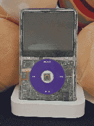
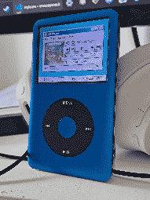

When I started up an MP3 collection to replace my use of Spotify in early 2023 (see Music), I was mostly using Android apps like Oto Music and Retro Music.
In June of that year, I purchased my first IPod. A purple 8gb IPod Nano, 4th gen. I had yet to learn of custom firmwares and flash mods at this point, so I just synced some music on with itunes and used it in my car.
Around this point I also got a hold of an IPod 5th gen, which used to belong to my dad, and had been broken ever since my younger brother pushed it out of a cat door many years ago.

Fast forward to October of that year, and I know a little more about what you can do with IPods in the current day. I sent the 5th gen to someone I found on Trade Me, who gave it a new battery and what I later found out was a kinda shoddy flash mod. After I worked up the courage to open the thing myself, I slapped some Aliexpress parts and a proper Iflash mod in it, and it was complete! The thing continued to be a great companion for listening to music in the car or at work, where access to the MP3 files was kinda tricky.
By this point, I had also discovered and made use of Rockbox, so of course I edited and used a custom theme for it. I can never say no to a custom theme.

Fast forward again to now (the tail end of 2024), and I have created my endgame device. 512GB of storage, with room to expand. A metal shell with rainbow backplate (and no apple branding!), and A 3000mAh battery (A good 4.5 times larger than it's original one).
With that, I have now ditched my phone and use this as my sole method of listening to music when not at my PC, wired headphones and all. And it's wonderful! I'd reccomend it to anyone who wants to give it a try.